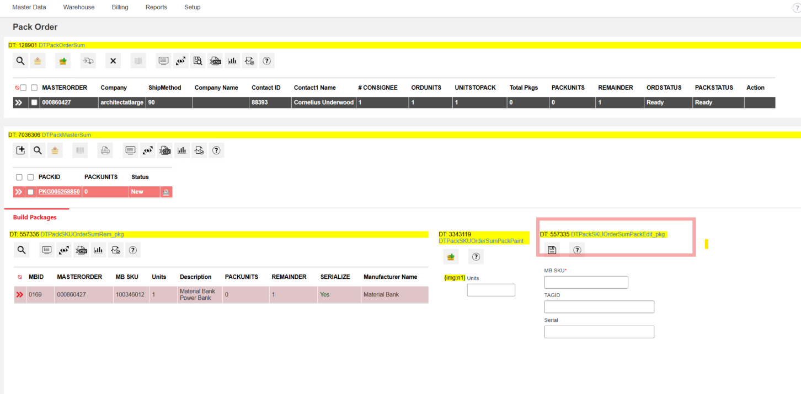
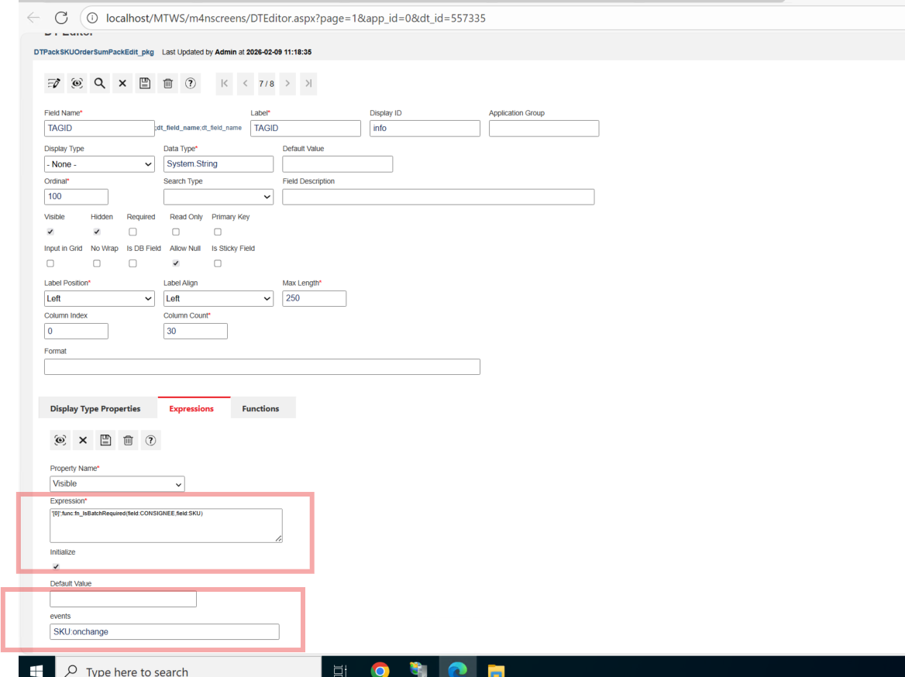
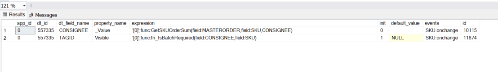
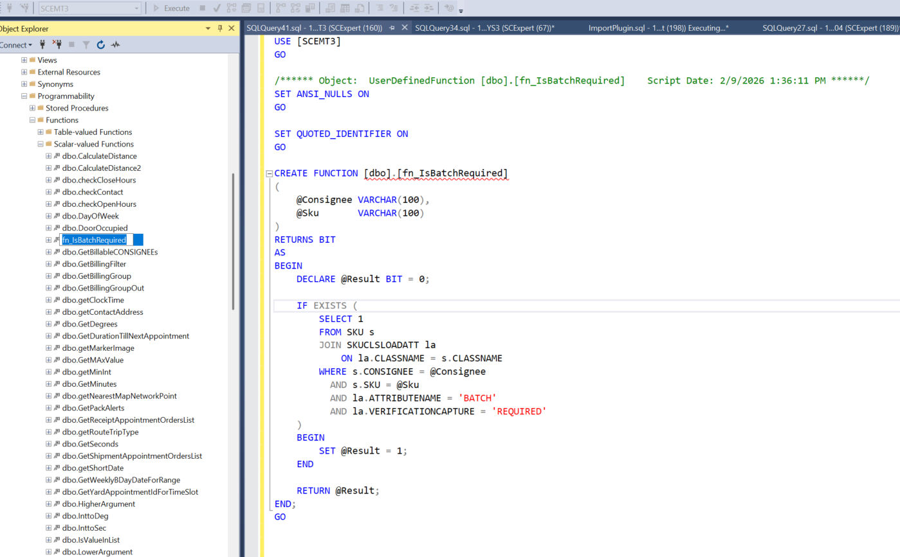
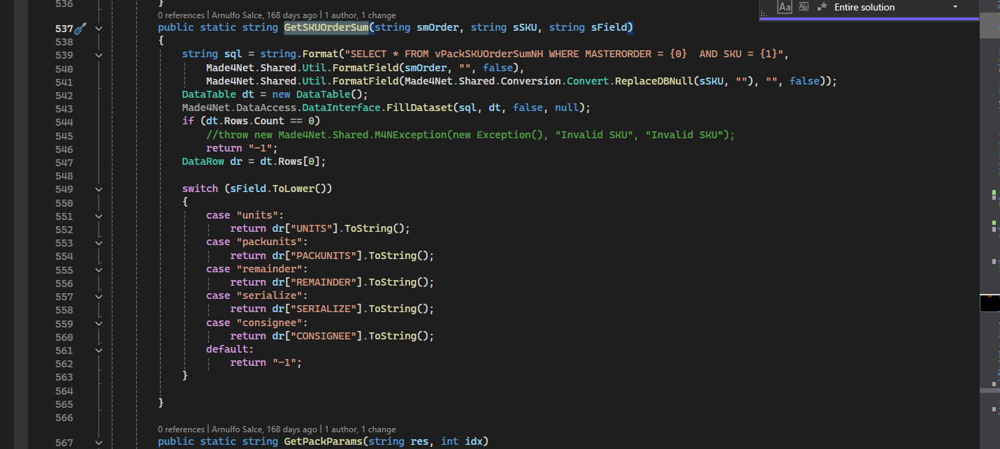
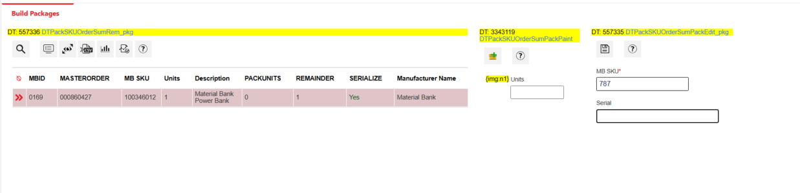

Field Expressions
Dynamic Field Visibility Using DT Expressions
Overview
This document explains end-to-end how a field visibility is controlled dynamically using an example from MT client Pack Order screen using:
- DT field expressions
- onchange Event
- Framework-level functions
- Database-level functions
The goal is to clearly document why TAGID appears or disappears when SKU changes, and how the full execution flow works.
Scope
This document covers:
- DT configuration and expressions
- Event triggering (
SKU:onchange) - Framework function execution
- SQL function execution
- UI behavior and outcomes
Data Table Information
| Property | Value |
|---|---|
| DT ID | 557335 |
| DT Name | DTPackSKUOrderSumPackEdit_pkg |
| Screen | Pack Order → Build Packages |
| Panel | Right-side Pack Edit |
| Primary Trigger | SKU change |
Pack Order Screen

TAGID
Field expression is given to Tag id under expressions tab and it is binded to onchange event of sku. So what ever function we give in this expressions gets executed when sku is changed Onchange event includes changing sku value, shifting keyboard control from sku field to anyother field.
- Display Type: Info
- Data Type: String
- Shown or hidden dynamically
- Visibility controlled entirely by DT expression
TAGID Field

DT Expression Configuration
Field: TAGID
Property Controlled
Visible
Expression
'0';func:fn_IsBatchRequired(field:CONSIGNEE,field:SKU)
Event
SKU:onchange
This configuration means every time SKU changes, the visibility of TAGID is recalculated. On sku Change a sql function fn_IsBatchRequired gets called
TAGID Expression Configuration

SQL Function: fn_IsBatchRequired
Purpose
Determines whether ** tag id** should be visible or not.
Function Signature
fn_IsBatchRequired (
@Consignee VARCHAR(100),
@Sku VARCHAR(100)
) RETURNS BIT
Logic Summary
- Default result =
0 - Checks SKU class attributes
- If
BATCHattribute exists withVERIFICATIONCAPTURE = 'REQUIRED' - Returns
1 - Otherwise
- Returns
0
function returning 0 means, TagId visibility = false ( TagID not visible) function returning 1 means, TagId visibility = True ( TagID visible)
fn_IsBatchRequired Function

Event Lifecycle
SKU:onchange
The SKU:onchange event is fired when:
- A SKU is selected
- A SKU value is typed
- A SKU value is replaced
This event triggers immediate re-evaluation of all DT expressions bound to it.
** Event Configuration**
App Logic Function: GetSKUOrderSum
Purpose
GetSKUOrderSum retrieves summary data for a given MASTERORDER + SKU combination.
- Written in App.Logic
- Executed when sku onchange happens.
Data Source
vPackSKUOrderSumNH
Possible returned values
| Field Parameter | Returned Value |
|---|---|
| units | UNITS |
| packunits | PACKUNITS |
| remainder | REMAINDER |
| serialize | SERIALIZE |
| consignee | CONSIGNEE |
GetSKUOrderSum Code

Parameter Handling in GetSKUOrderSum
In the DT expression configuration, the function is called like this:
func:GetSKUOrderSum(field:MASTERORDER,field:SKU,CONSIGNEE)
In DT expressions:
field:FIELDNAME
means:
Pass the current value of this UI field to the function.
So in this case:
field:MASTERORDER→ passes the current MASTERORDER value from the UI rowfield:SKU→ passes the current SKU value from the UI row
These values are dynamic and come from the Data Table.
CONSIGNEE is passed as string literal
The third parameter:
CONSIGNEE
is not a UI field reference.
It is a literal string value passed to the function.
Inside the function in App Logic:
public static string GetSKUOrderSum(string smOrder, string sSKU, string sField)
The third parameter (sField) tells the function which column to return from the query result.
Inside the switch statement:
case "consignee":
return dr["CONSIGNEE"].ToString();
So:
CONSIGNEEis acting as a selector- It tells the function which column to extract from
vPackSKUOrderSumNH - It is not reading the UI field value
Function Call
GetSKUOrderSum(
field:MASTERORDER, ← value from UI
field:SKU, ← value from UI
CONSIGNEE ← literal string telling function which DB column to return
)
The third parameter dynamically decides which column is returned.
End-to-End Execution Flow
User changes SKU
↓
SKU:onchange event fired
↓
GetSKUOrderSum called (App.Logic)
↓
CONSIGNEE resolved
↓
fn_IsBatchRequired called (SQL function)
↓
Function returns 1 or 0
↓
TAGID Visible or Hidden
UI Behavior
Why TAGID Disappears on SKU Change
- TAGID visibility is bound to
SKU:onchange - When SKU is edited or partially entered:
- SKU may be temporarily invalid
- No matching SKU data found
fn_IsBatchRequiredreturns0- TAGID is hidden immediately
** TAGID Hidden After SKU Change**
